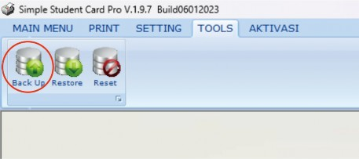
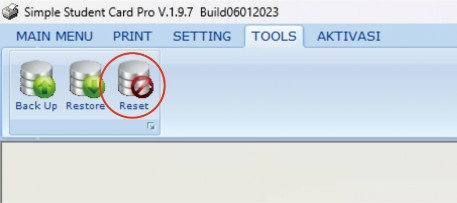
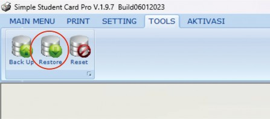
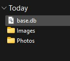
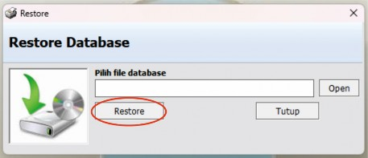

-
Buka aplikasi dan cek dahulu apakah data yang diaplikasi masih diperlukan atau tidak. Jika masih diperlukan, lakukan Backup data dan jadikan arsip.
Tombol backup seperti pada gambar ini menunjukkan fungsi untuk menyimpan data aplikasi sebelum melakukan perubahan atau reset, penting untuk menghindari kehilangan informasi.
-
Jika tidak ada data yang penting dalam aplikasi, hapus record dengan klik tombol Reset yang berada dalam halaman Tools.
Tombol reset ini terletak di halaman Tools, digunakan untuk menghapus semua data yang tersimpan di aplikasi jika tidak lagi diperlukan.
-
Setelah di reset, masukkan settingan yang sudah ada dengan klik tombol restore yang terdapat pada halaman Tools.
Tombol restore, juga di halaman Tools, berfungsi untuk memuat konfigurasi atau data yang telah dibackup sebelumnya.
-
Pilih file yang bernama base/base.db dan tekan Restore. Tunggu hingga proses selesai; biasanya ketika diklik restore langsung muncul notifikasi "data tidak ditemukan". Jika ada notifikasi seperti itu, abaikan saja, tunggu sampai muncul notifikasi setelahnya.
Ini adalah contoh file yang perlu dipilih saat proses restore settingan, pastikan nama filenya adalah 'base/base.db'.
Setelah memilih file, klik tombol restore seperti yang ditunjukkan pada gambar ini untuk memulai proses input setting.
-
Cek kembali settingan jika ada yang kurang pas, harap setting lagi.